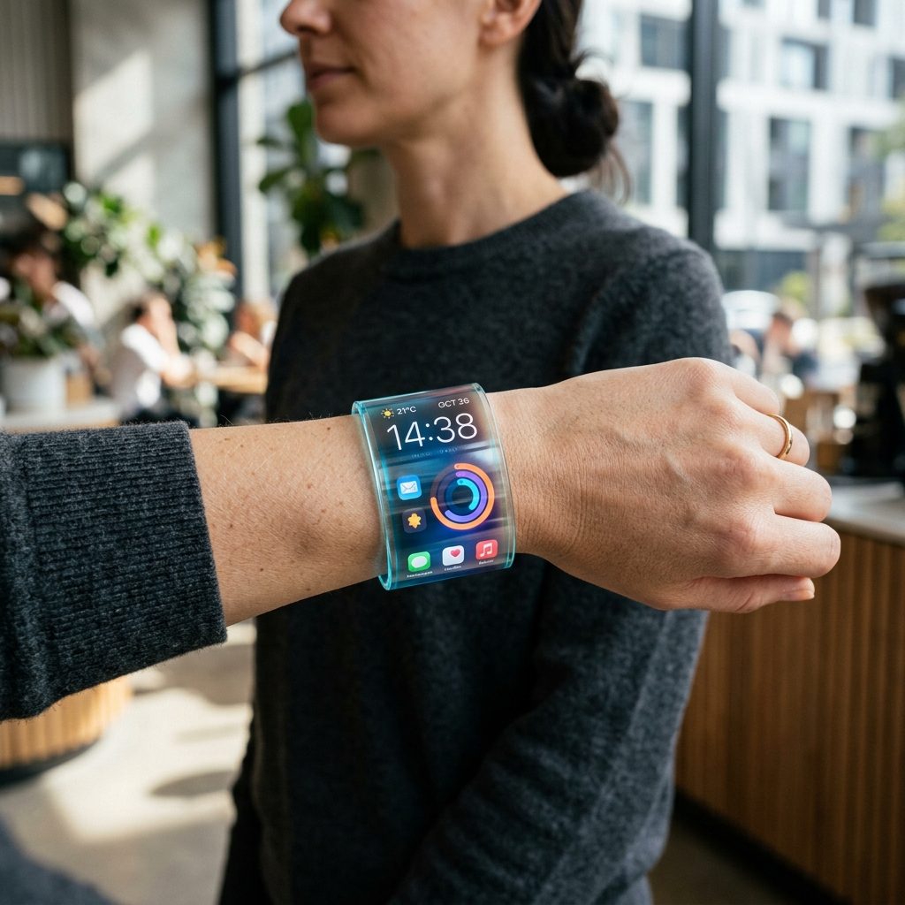
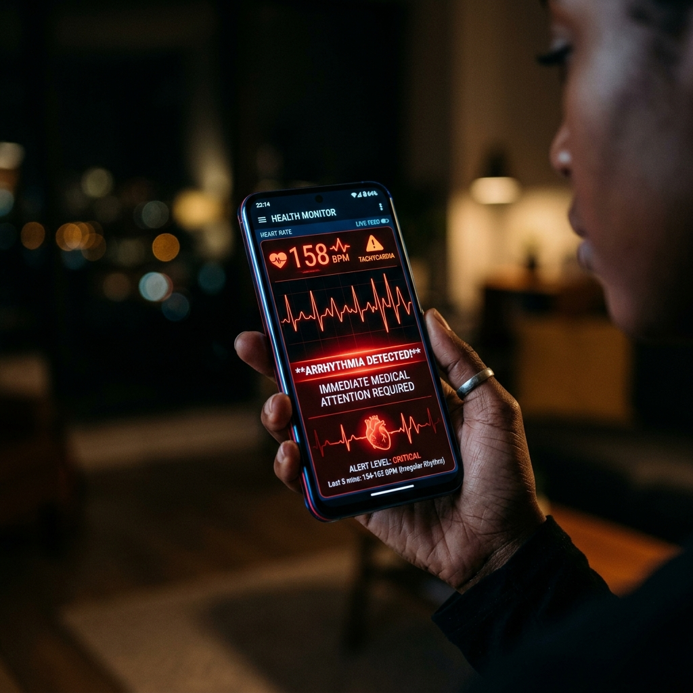
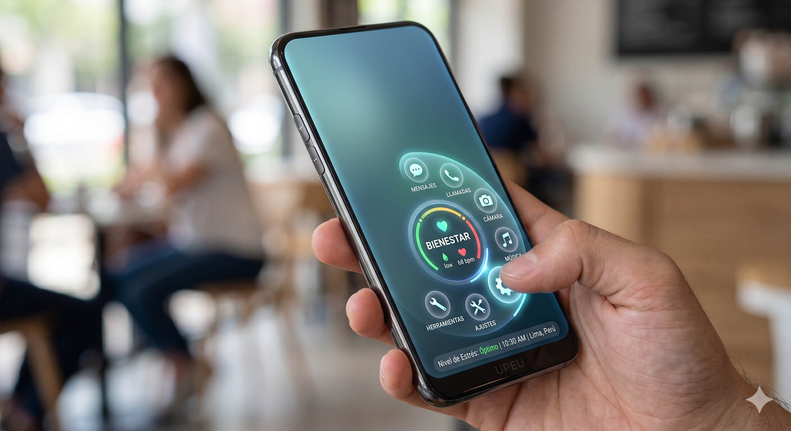

Taller SCAMPER
REINVENTANDO EL SMARTPHONE
Descubre el SCAMPER SMARTPHONE: La evolución definitiva de la comunicación personal a través de la creatividad disruptiva.
Desliza para explorar

Cuerpo flexible que permite enrollar el smartphone en la muñeca o estirarlo como tablet.

Iconos que flotan y se agrupan automáticamente según tus hábitos del día.

IA que aprende tu forma de hablar y escribir para sugerir respuestas exactas.

Sistema visible que cambia de color según la temperatura del procesador.

Monitor constante que detecta arritmias o ataques de pánico y envía alertas a emergencias.
Transforma mesas en estaciones de trabajo con proyector de teclados y pantallas 3D.

Análisis de comida y aire para detectar sustancias peligrosas o gases nocivos.

Traduce lenguaje de señas a voz en tiempo real y convierte ruidos en vibraciones.

Eliminación del puerto USB. Diseño hermético 100% resistente al agua gracias a carga solar.

Sustitución por eSIM virtual, liberando espacio para baterías más grandes y sensores médicos.

Interfaz Única que elimina aplicaciones innecesarias, mostrando solo lo útil en cada momento.
Eliminación de botones de volumen y encendido. Marcos sensibles a la presión para un diseño liso.
El Software se reordena según tu estrés o fatiga, mostrando solo lo esencial en crisis.
Energía distribuida en la funda y paneles solares para un cuerpo ultra delgado y ligero.

Diseño circular optimizado para el pulgar, permitiendo control total con una sola mano.
Sensores de salud en frontal y laterales, convirtiendo el agarre en monitoreo médico constante.

Parte trasera con pantalla de tinta electrónica (E-ink) para lectura y notificaciones rápidas.